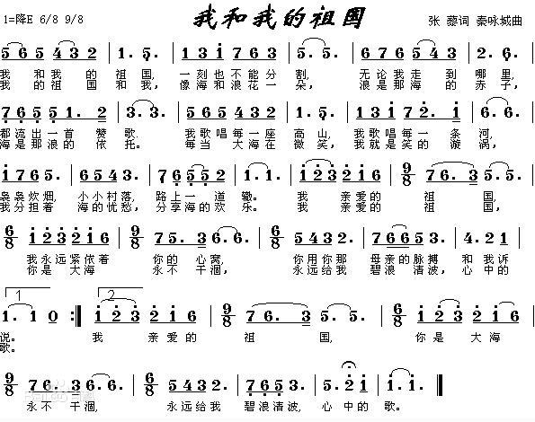
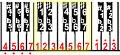
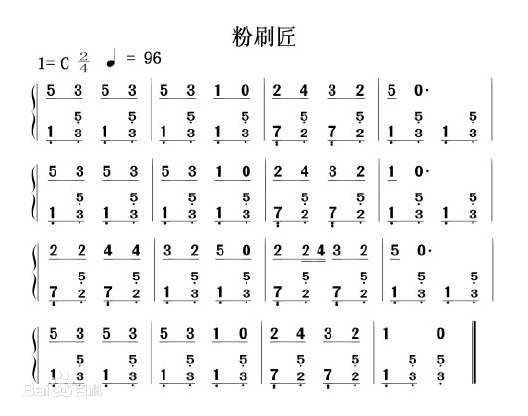
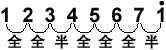
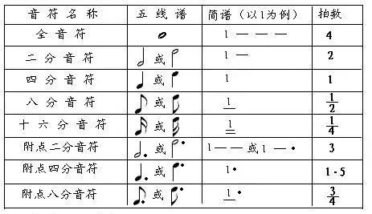
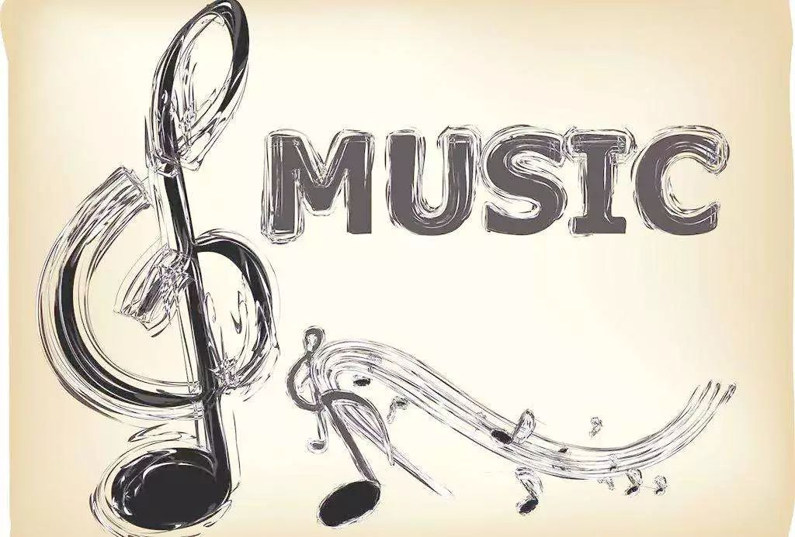

i.e. NMN、Numbered Musical Notation
_简谱 2 是指一种简易的记谱法，在字母简谱和数字简谱两种。其起源于 18 世纪的法国，后经德国人改良，遂成今日之貌。一般所称的简谱，系指数字简谱。
数字简谱以可动唱名法为基础，用 1、2、3、4、5、6、7 代表音阶中的 7 个基本级，读音为 do、re、mi、fa、sol、la、si ，英文由 C、D、E、F、G、A、B 表示，休止以 0 表示。每一个数字的时值相当于五线谱的 4 分音符。
基本要素
一般来说，所有音乐的构成有四个基本要素，而其中最重要的是“音的高低”和“音的长短”。
1. 音的高低
任何一首曲子都是高低相间的音组成的，从钢琴上直观看就是越往左面的键盘音越低，越往右面的键盘音越高。就数字简谱来说，在数字的正上方或下方有若干个点 . 、 : 符，点的多少可以理解为强度，越多越强，在其上方代表高音，在其下方代表低音。原理表现为物体振动频率，越高音振动频率越高，反之亦然。
2. 音的长短
除了音的高低外，还有一个重要的因素就是音的长短。音的高低和长短的标注决定了该曲子有别于另外的曲子，因此成为构成音乐的最重要的基础元素。原理表现为声音的时值长短。
3. 音的力度
音乐的力度很容易理解，也叫强度。一首音乐作品总是会有一些音符的力度比较强一些，有些地方弱一些。而力度的变化是音乐作品中表达情感的因素之一。原理表现为振幅的大小。
4. 音质
也可以称为音色。也就是发出音乐的乐器或人声。同样旋律的音高，男生和女生唱就不一样的音色，小提琴和钢琴的音色就不一样。
上述四项构成了任一首乐曲的基础元素，应该说简谱基本可以将这些基础元素确标注。
基础知识
1. 音符
音符，表示音的高低的基本符号，用七个阿拉伯数字标记，它们的写法和读法如下：
| 写法 | 1 |
2 |
3 |
4 |
5 |
6 |
7 |
i |
| 读法 | Do | Re | Mi | Fa | Sol | La | Si | Do |
| 哆 | 来 | 米 | 发 | 索 | 拉 | 西 | 哆 |
以上各音其相对关系都是固定的，除了 3--4、7--i 是半音外，其它相邻两个音都是全音。
音符是和音高紧密相连的，没有一个不带音高的音符。
音符是数字符号如 1、2、3、4、5、6、7 就表示不同的音高，广义上说音乐里总共就有 7 个音符。
1.1 音符高低
为了标记更高或更低音，则在基本符号的上面或下面加上小圆点。在简谱中，不带点的基本符号叫做中音；在基本符号上面加上一个点叫高音，加两个点叫做倍高音，加三个点叫超高音；在基本符号下面加一个点叫低音，加两个点叫倍低音，加三个点叫超低音。
记在简谱基本音符号下面的小圆点，叫低音点，它表示将基本音符降低一个音组，取降低一个纯八度。记两个圆点，表示将基本音符号降低两个音组，即降低两个纯八度。
记在简谱基本音符号上面的小圆点，叫高音点，它表示将基本音符号升高一个音组，即升高一个纯八度。记两个圆点，表示升高两个音组，即升高两个纯八度。
1.2 音符长短
音乐中的音符除了有高低之分外，当然还要表示长短之分。这里引用一个基础的音乐术语 – 拍子。拍子是表示音符长短的重要概念。
表示音乐的长短需要有一个相对固定的时间概念。简谱里将音符分为全音符、二分音符、四分音符、八分音符、十六分音符、三十二分音符等。
在这几个音符里面最重要的是四分音符，它是一个基本参照度量长度，即四分音符为一拍。这里的一拍是一个相对时间度量单位。一拍的长度没有限制，可以是 1 秒也可以是 2 秒或半秒。假如一拍是一秒的长度，那么二拍就是两秒；一拍定为半秒的话，两拍就是一秒的长度。一旦这个基础的一拍定下来，那么比一拍长或短的符号就相对容易了。
用一条横线 - 在四分音符的右面或下面来标注，以此来定义音符的长短。下面列出了学用音符和它们的长度标记：
| 音符名称 | 写法 | 时值 |
|---|---|---|
| 全音符 | X--- |
四拍 |
| 二分音符 | X- |
二拍 |
| 四分音符 | X |
一拍 |
| ————– | ——– | ———— |
| 八分音符 | X |
半拍 |
- |
||
| ————– | ——– | ———— |
| 十六分音符 | X |
四分之一拍 |
= |
||
| ————– | ——– | ———— |
| 三十二分音符 | X |
八分之一拍 |
≡ |
通过上表可以看出：横线有标注在音符后面的，也有标注在音符下面的，横线标记的位置不同，被标记的音符的时值也不同。从表中可以发现一个规律，就是：要使音符时值延长，在四分音符右边加横线 - ，这时的横线叫延时线。延时线越多，音持续的时间（时值）越长。相反，音符下面的横线越多，则该音符时间越短。
1.3 半音与全音
音符与音符之间是有“距离”的，这个距离是一个相对可计算的数值。在音乐中，相邻的两个音之间最小的距离叫半音，两个半音距离构成一个全音。表现在钢琴上就是钢琴键盘上紧密相连的两个键盘就构成半音，而隔一个键盘的两个键盘就是全音。
1.4 附点音符
附点就是记在音符右边的小圆点，表示增加前面音符时值的一半，带附点的音符叫做附点音符。
1.5 反复记号
表示记号内的曲调反复唱（奏）。
1.6 休止符
音乐中除了有音的高低，长短之外，也有音的休止。表示声音休止的符号叫 休止符 ，用 0 标记。通俗点说就是没有声音，不出声的符号。
休止符与音符基本相同，也有六种。但一般直接用 0 代替增加的横线，每增加一个 0 ，就增加一个四分休止符时的时值。
2. 增时线和减时线
简谱中，音的长短是在基本音符的基础上加短横线、附点、延音线和连音符号表示的。
短横线的用法有两种：写在基本音符右边的短横线叫 增时线 ，增时线越多，音的时值就越长。不带增时线的基本音符叫四分音符，每增加一条增时线，表示延长一个四分音符的时间。写在基本音符下面的短横线叫 减时线 ，减时线越多，音就越短，每增加一条减时线，就表示缩短为原音符音长的一半。
写在音符右边的小圆点叫做 附点 ，表示延长前面音符时值的一半。附点往往用于四分音符和少于四分音符的各种音符，带附点的音符叫附点音符。
3. 变化音
临时改变音的高低的符号叫临时变音记号，主要有升号、降号、还原记号等。升号定在音符左上方，表示该音要升高半音，如 #1 表示将 1 升高半音，在吉他上的奏法就是向高品位方向进一格。降号写在音符左上方，表示该音要降低半音，如 b3 表示将 3 降低半音，在吉他上的奏法就是向低品位方向退一格，空弦音降半音就要退到低一弦上去。还原号是将一小节内 # 或 b 过的某个音回到原来的位置。
以上临时变音记号都是一小节内才起作用，过了这小节就不起作用了，一小节也就是 |XXXX| 。
将标准的音符升高或降低得来的音，就是变化音。将音符升高半音，叫升音，用 # (升号) 来表示；将标准的音降低半音，叫降音，用 b （降号）表示；基本音升高一个全音叫重升音，用 x （重升）表示；基本音降一个全音叫重降音，用 bb （重降音）表示；将已经升高（包括重升）或降低（包括重降）的音，要变成原始的音，则用还原记号 ♮ 表示。
4. 调号
按照一定的次序和位置记在谱号的后面的记号叫做 调号 。调号总是只用同类的变音记号，即升记号或降记号。简谱的调号一般是用 1 等于 A、B、C、D、E、F、G 来表示，如 1C则表示该简谱是 C 调来记谱，如果要表示升降号的调，则在字母前加#号或者b` 号，可以参考一些简谱图片示例。
5. 节奏和节拍
掌握读谱，首先要掌握节奏，练习掌握节奏要能准确的击拍。击拍的方法是：手往下拍是半拍，手掌拿起有半拍，一下一上是一拍。
乐曲或歌曲中，音的强弱有规律地循环出现，就形成节拍。节拍和节奏的关系，就像列队行进为整齐的步伐（节拍）和变化着的鼓点（节奏）之间的关系。
单拍指每小节一个强拍。复拍每小节有一个强的，有若干个次强的。
6. 调式音阶
按照一定关系结合在一起的几个音（一般是七个音左右）组成一个有主音（中心音）的音列体系，构成一个调式。
把调式中的个音，从主音到主音，按一定的音高关系排列起来的音列，叫 音阶 。
6.1 大调式
凡是音阶排列符合 全、全、半、全、全、全、半 结构的音阶，就是自然大调。这是使用的最广泛的调式。
一般来说，一首音乐作品的开始音符是使用 1、3 或 5 的，而结束在 1 上的就是大调音乐，比如国歌就是大调音乐。要想真正搞懂大调音乐，必须要学习和声知识。
6.2 小调式
小调式有三种形式：
- 自然小调：凡是音阶符合
全、半、全、半、全、全结构的音阶，叫自然小调； - 和声小调：升高自然小调音阶的第 VII 级，叫和声小调；
- 旋律小调：在自然小调音阶上行时升高它的
4、5，而下行时还原5、4叫旋律小调。
小调音乐一般第一个音符是从 6 或 3 开始，而结束在 6 上。比如《莫斯科郊外的晚上》就是小调音乐。同大调一样，要想真正搞懂小调音乐，必须要学习和声知识。
7. 装饰音
装饰音的作用主要是用来装饰旋律。它们用记号或小音符表示，装饰音的时值很短。有：
- 倚音：指一个或数个依附于主要音符的音，倚音时值短暂。有前倚音、后倚音之分；
- 颤音：由主要音和它相邻的音快速均匀地交替演奏；
- 波音：由主要音和它上方或下方相邻的音快速一次或再次交替而成；
- 滑音：主要音向上或向下滑向某个音。滑音分上滑音、下滑音两种。滑音除声乐演唱这一技巧外，一切弦乐器都可演奏，但钢琴等键盘乐器是无法演奏这一技巧的。
8. 其他相关符号
8.1 顿音记号
用三角符标记在音符的上面，表示这个音要唱（奏）得短促、跳跃。
8.2 连音线
用上弧线标记在音符的上面，它有两种用法：
- 延音线：如果是同一个音，则按照拍节弹奏完成即可，不用再弹奏；
- 连接两个以上不同的音，也称圆滑线，要求唱（奏）得连贯、圆滑。
8.3 重音记号
用 > 或 □ 或 sf 标记在音符的上面，表示这个音要唱（奏）得坚强有力；当 > 与 □ 两个记号同时出现时，表示更强。
8.4 保持音记号
用 - 标记在音符的上面，表示这个音在唱（奏）时要保持足够的时值和一定的音量。
8.5 小节线
用竖线将每一小节划分开线叫小节线。
8.6 终止线
终止线是在乐曲最后，将要结束的地方，这里就不能单纯的画小节线，而是要区别一般的小节线来表示，这种表示的方法是用两条竖线，其中一条细线，一条粗线并行，细的一条在前，粗的一条在后，这叫“终止线”，表明乐曲终了。
8.7 换气号
用记号 v 标记，不服水土在此处换气。
乐理识谱1
基本乐理是学习乐器的基础。初学者学习笛箫等乐器，在能够吹响并熟练掌握指法后，除了需要重点学习和掌握吹奏技巧和基本功如口风控制，气息把握等，还需要对基本乐理进行学习，因为想学好乐器，唱谱、节奏很重要。本文重点讲述基本乐理与识谱。
笛箫类乐器不同于钢琴等乐器，除少数专业的笛子谱用五线谱记谱外，一般笛箫大多用简谱记谱。简谱所适用的规则，在笛箫谱上同样适用。但是笛箫谱不仅具有简谱的一般特征，还具有本身的专业特征。在谱面上还会标注笛箫演奏所涉及的各种演奏技法，如吐音（单吐、双吐）叠音、打音、颤音、指法等，而在单纯的简谱中则不会有这些内容。
音的高低
在简谱中，用以表示音的高低及相互关系的基本符号为七个阿拉伯数字，即 1、2、3、4、5、6、7 ，唱作 do、re、mi、fa、sol、la、si ，称为 唱名 。单用以上七个音是无法表现众多音乐形象的。在实际作品中，还有一些更高或更低的音，如在基本音符上方加记一个 . ，表示该音升高一个八度，称为高音；加记两个 : ，则表示该音升高两个八度，称为倍高音。在基本音符下方加记一个 . ，表示该音降低一个八度，称为低音；加记两个 : ，则表示该音降低两个八度，称为倍低音。
音的长短
在简谱中，如果音符时值的长短表示方法如下图：
带有两个附点的单纯音符为复附点音符，第二个附点表示增长第一个附点时值的一半，即音符时值的四分之一。复附点常用于器乐曲中，在歌曲中很少使用。
连音线和延音线
延音线 是一条向上或向下弯曲的弧线，其作用是：将两个或两个以上具有相同音高的音符相连，在演唱或演奏时作为一个音符，它的长度等于所有这些音符的总和。在单声部音乐中，连线永远写在和符干相反的方向。
连音线 表示的是演奏法，可以把几个不同音高的音连在一起，表示为：在钢琴上是连音奏法，表示这几个音要演奏得连贯、圆滑。前者只是相同的音，而后者则不是。
切分音
除了常用的强弱变化外，还有用“切分法”来进行强弱变化，所谓的切分法就是通过延长弱拍音符的时值使强拍的重音位置向前移到弱拍，改变了乐曲中的“以强拍为重音”的规律这个原弱拍上的音被称为切分音。切分音的记法是在一小节或一拍之内记成一个音，跨小节的记成加连线的两个音。
休止符
在乐谱中表示音乐的休止（停顿）的符号称为 休止符 。简谱的休止符用 O 表示。休止符是一种不发声的符号，又称为“无声的音符”。在音乐中，休止符一般起句逗作用，并能加强歌（乐）曲的表现力，变化歌（乐）曲的情绪，使曲调的进行表现出对比的效果。
休止符停顿时间的长短与音符的时值基本相同，只是不用增时线，而用更多的 O 来代替，每增加一个 O ，表示增加一个相当于四分休止符的停顿时间， O 越多，停顿的时间越长。同音符的音长一样，一个 O 表示休止一拍。
反复记号
音乐反复记号有以下四种：
第一种：终止线前一个冒号。分两种情况演奏：如果之前有一个终止线，在终止线之后有一个冒号的，则反复这两个反复记号中夹着的一段；如果之前没有反复记号，则从头开始反复。
第二种：D.C. 记号。意大利语： da capo ，从头反复。当出现 Fine 记号时则反复至 Fine 记号结束。
第三种：D.S. 记号。意大利语： dal segno ，从记号处重复。记号为 ※ ，从该记号处重复。
第四种：反复跳越记号。反复跳越记号是段落反复记号的一种补充。一般有 1、2 两段，弹奏时从头到 1 结束，再从头跳过 1 弹 2 ，然后结束。
拍子的拍号
将旋律的强拍与弱拍用固定音值进行强弱循环，有规律地组合，称为 拍子 。拍子分为单拍子与复拍子两种。每小节的每一拍由一个完整音符即单纯音符组成的拍子，称为单拍子；每小节的每一拍由一个附点音符或与其等值的音符组成的拍子，称为复拍子。用以表示不同拍子的符号称为拍号。拍号一般标记在调号的后边。例如： 1=C 2/4, 1=G 3/4 。
标准的乐谱前面会标出速度，例如 “120” 表示每分钟 120 拍，那么 1拍=0.5秒 ，演奏者则需要对节奏（音长）进行掌控，这一点笔者认为都需要不断的学习才能掌握节奏的控制。但很多笛箫曲并不像歌曲一样有明确的拍长，比如曲谱并没有标出拍子的时值，而是标有“自由地”或者“欢快地”、“节奏自由（或者曲谱上有草字头的标记）”等等字眼，这就是笛箫的魅力所在，每个人对曲子的理解不同，可以结合作者的原作和自己的理解，自己把握曲子的节奏，这也并不是节奏全无的演奏，使乐曲的美感完全丧失，演奏者也需要不断的学习才能够演奏出一支富有情感的曲子。
调与调号
调由两部分组成，即主音的高度与调式类别。如自然大调音阶 1、2、3、4、5、6、7、i ， 1(do) 的高音等同于键盘中的 C 音，则此音阶称为 C 自然大调音阶；自然小调音阶 6、7、1、2、3、4、5、6 中， 6(la) 的音高等同于键盘中的 A 音，则此音阶称为 a 自然小调音阶。在简谱中，歌曲、乐曲调的高低均按大调的高低确定，即按憗（do）音的音高确定调的高低。因此 C 大调与 A 小调在简谱中的调号均为 1=C ，它不代表歌曲的调式。
调号是用以确定歌曲、乐曲（或调子）高度的定音记号。在简谱中，调号是用以确定 1(do) 音的音高位置的符号。例如当一首简谱歌曲为 D 调是，其调号就为 1=D 。
常用技术符号
笛箫音的强弱是与通过风门送进乐器内的空气量有关的。吹奏同一个音时，一般来说，强奏时的用气量比弱奏时用的气量大。乐谱中符号 p 表示弱音，符号 p 的数量越多表示音越弱；符号 f 表示强音，符号 f 的数量越多表示音越强。渐强符号为 < ，渐弱记号为 > 。其余的笛箫谱中常见的大部分符号如下图所示：